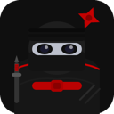
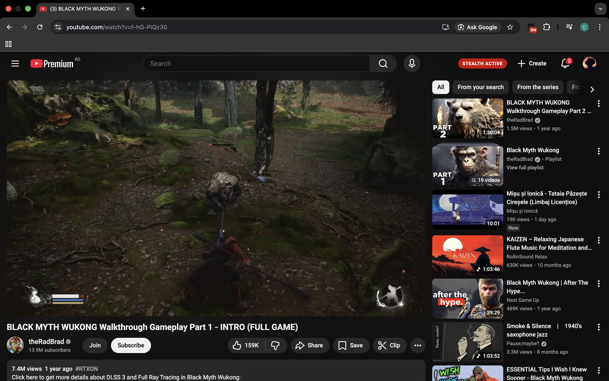
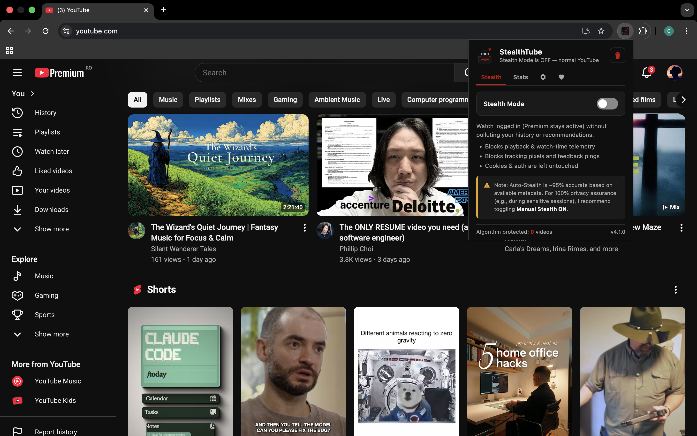
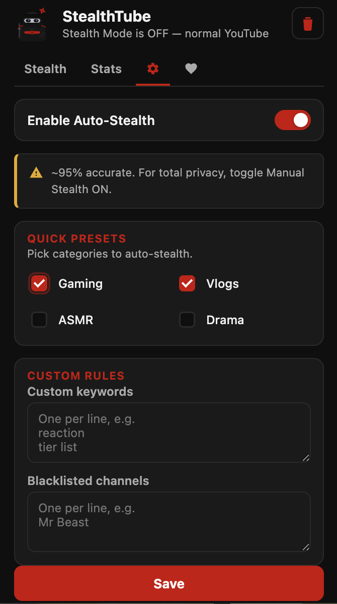
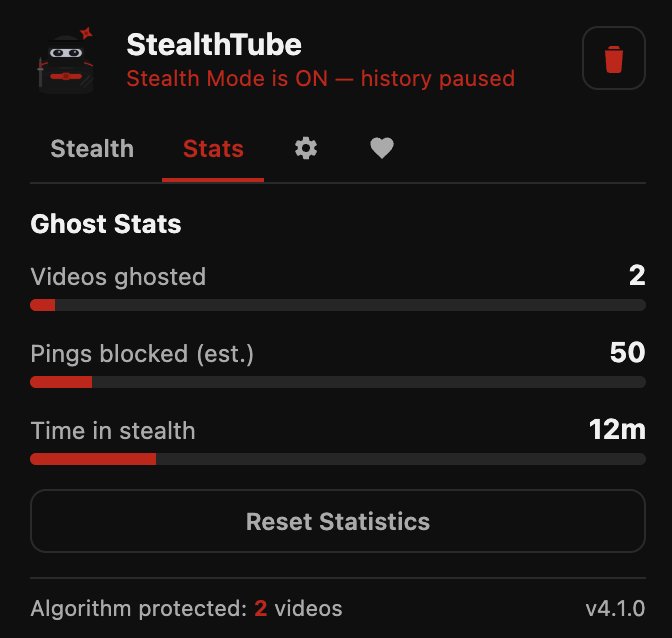

StealthTubeFree · Open source · No tracking
Stay logged in, keep Premium, and stop every video from polluting your watch history and recommendations. One click — browse in stealth.
No logging out, no second profile. StealthTube works while you stay signed in.
Videos you watch in stealth don't touch your history or home feed.
Runs entirely in your browser. No accounts, no servers, no tracking.



